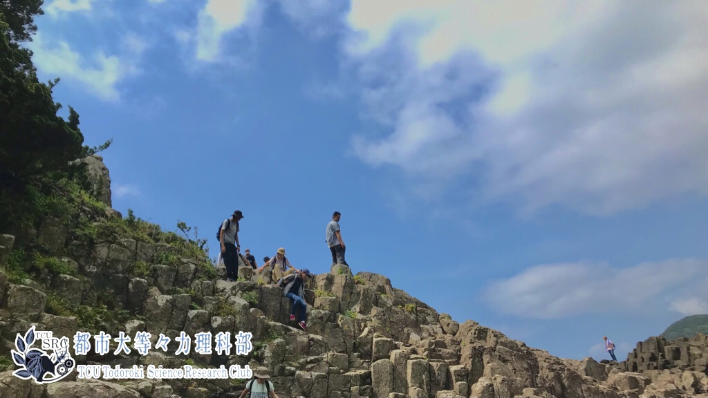
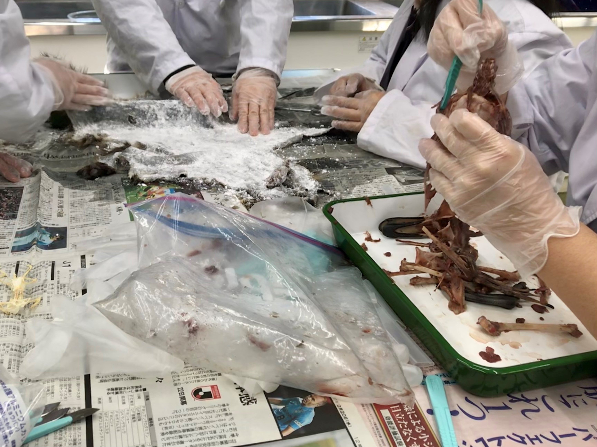
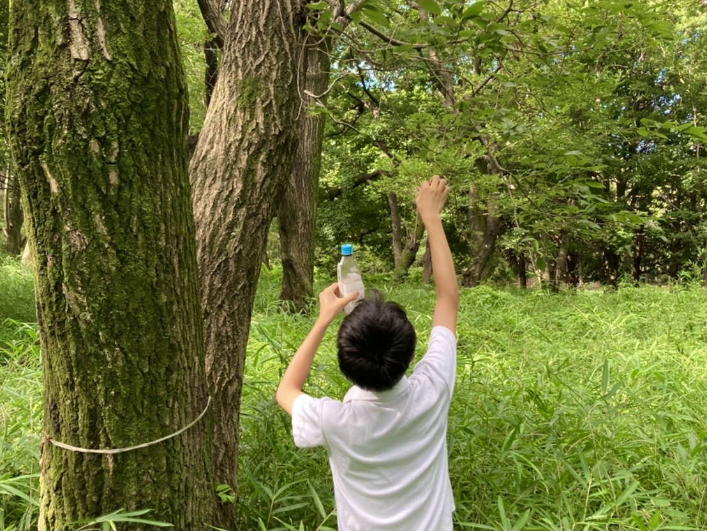
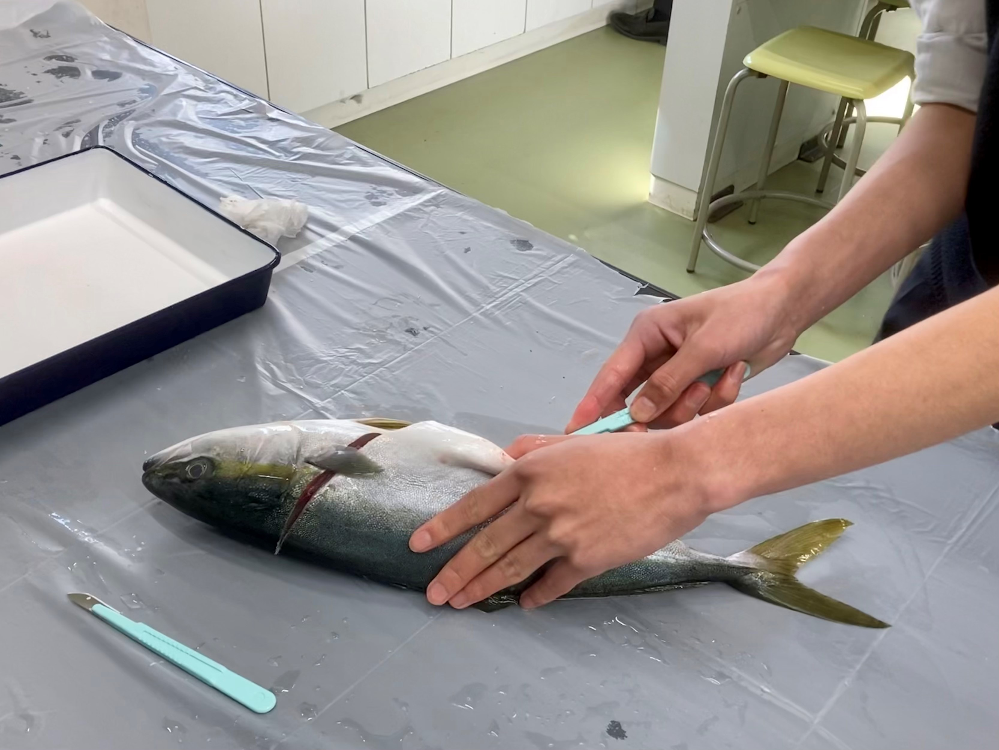
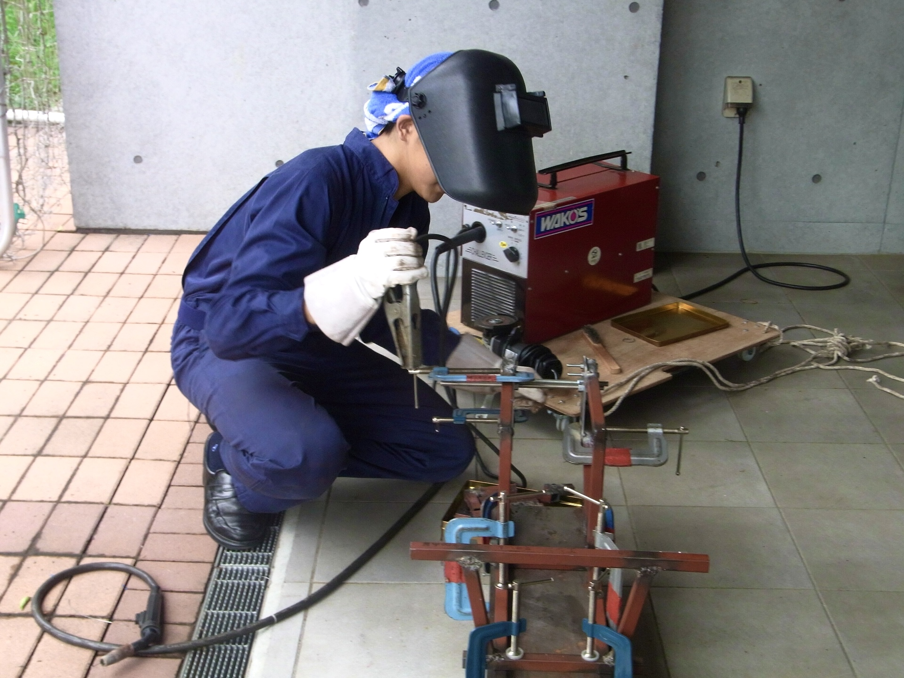
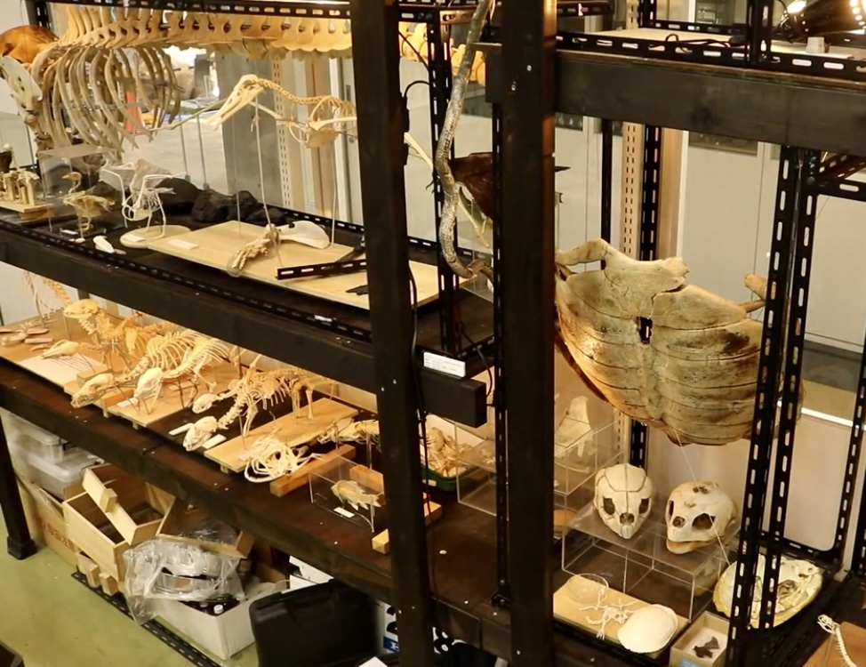

都市大等々力理科部とは？
理科部では、自然を愛する心と未知なるものへの探求心の２つの心を育てるべく、「科学技術や理学への興味・関心の育成」「科学的思考の育成」「基礎研究への手法・技術力の育成」「他者に伝える力・技術の育成」を行っています。
日々の活動は、各分野ごとに５つの班に分かれて専門的な活動を行っています。この他にも、学校行事でのサポーターとして様々な活動の支援も行っています。
各班の活動内容

他にも、プラネタリウムのドームと投影機を製作しています。

班員で協力して完成させたときの達成感はひとしおです！
脊椎動物研究班
脊椎動物研究班では、様々な生き物の解剖や骨格標本の作成を行なっています。班員で協力して完成させたときの達成感はひとしおです！

昆虫調査班
昆虫調査班では、多摩川河川敷で昆虫採取を行い昆虫の分布などを調べてたり、乾燥標本や樹脂標本を作成したりしています。

他にも、多摩川でアミやトラップを使って捕獲した水棲生物を観察、飼育をしています。
水棲生物調査班
水棲生物調査班では、水棲生物の解剖、標本作成などの活動を行っています。他にも、多摩川でアミやトラップを使って捕獲した水棲生物を観察、飼育をしています。
天文班
天文班では、第１校舎屋上で天体望遠鏡を使った天体観測や星の観測をしています。他にも、プラネタリウムのドームと投影機を製作しています。

技術班
技術班では、エコ１チャレンジカップに出場する電気自動車を製作する車班とHP（ホームページ）作成をメインとしているプログラミング班に分かれて活動しています。
藍桐祭

日々の活動で得た学びや成果を理科が好きな方はもちろん、そうでない方にも分かりやすく満足していただけるような展示や説明を行っています。また、普段の活動により得た様々な気付きや知識以外にも夏合宿での経験を通じて研究したことを実物や実体験を添えてお伝えします。
理科部 藍桐祭特設ページ
部活動見学

【電車】等々力駅 下車 徒歩10分
【バス】都市大等々力キャンパス前 下車 徒歩１分
都市大等々力キャンパス東 下車 徒歩５分
玉川警察署 下車 徒歩５分
新型コロナウイルスの感染拡大に伴い活動が制限されているため、
学校説明会開催時に活動をやっていない可能性があります。
本校が開催している学校説明会もしくはオープンスクールに参加していただくと部活動見学をする時間がございますので、部活動見学を希望される方はこちらに参加していただきますようお願いします。
注）部活動見学 と書かれているイベントにご参加ください。
イベント予約サイト (中学)
イベント予約サイト (高校)

アクセス
【バス】都市大等々力キャンパス前 下車 徒歩１分
都市大等々力キャンパス東 下車 徒歩５分
玉川警察署 下車 徒歩５分